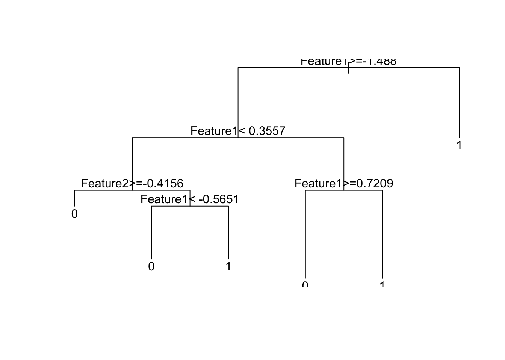
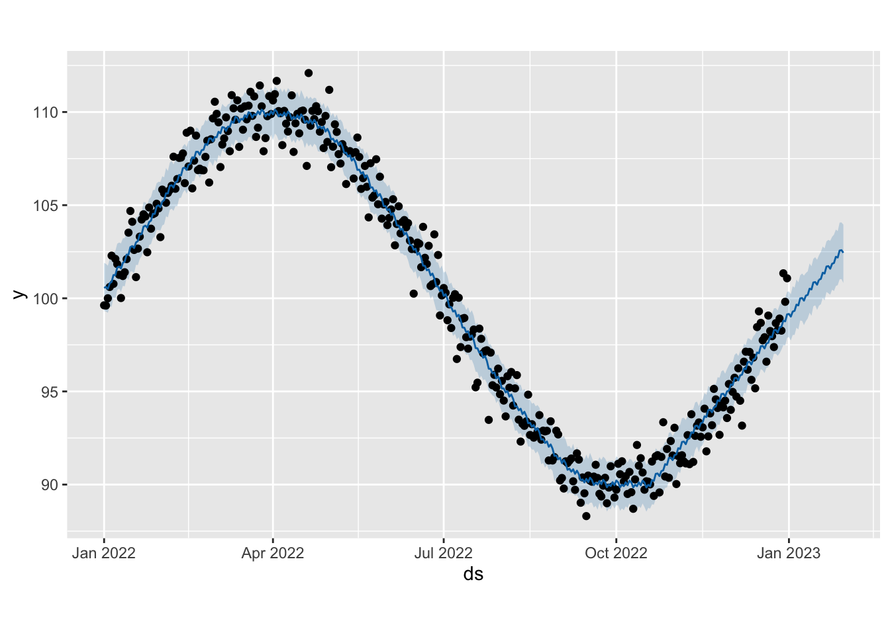

Chapter 4 Predictive analytics
4.1 工具箱
- 各种统计模型 : 逻辑回归
- 各种机器学习模型: xgboost
由于数据科学通常希望强解释性, 因此常常会使用可解释性强的模型或者使用可解释机器学习相关的工具来解释模型.
4.1.1 GLM
逻辑回归（Logistic Regression）是一种统计学习方法，用于解决二分类问题，即将数据分为两个不同的类别。尽管它包含”回归”这个名词，但实际上它是一种分类算法，用于预测二元输出（通常是0或1）。
逻辑回归的优点和特点包括：
简单和高效： 逻辑回归是一个非常简单的模型，容易理解和实现。训练速度快，适用于大规模数据。
可解释性： 逻辑回归的系数可以用来解释特征对分类结果的影响。这使得逻辑回归在解释性要求高的应用中很有用。
适用性广泛： 逻辑回归可以用于处理二分类问题，也可以通过一些变种扩展到多分类问题。它广泛应用于医学、生物学、社会科学、金融等领域。
对异常值鲁棒： 逻辑回归对异常值的影响较小，因为它使用的是逻辑函数，而不是线性函数。
尽管逻辑回归在许多领域中都有出色的表现，但它也有一些限制，包括：
- 它通常只能处理线性可分问题，对于非线性问题需要额外的工作，如特征工程或使用核技巧。
- 对于高维数据，可能需要正则化来防止过拟合。
- 逻辑回归不是一个强大的模型，不能捕捉复杂的数据关系。
总之，逻辑回归是一个常用的分类算法，特别适用于简单的分类问题和解释性要求高的场景。在选择分类算法时，应根据具体问题和数据特性来决定是否使用逻辑回归或其他更复杂的模型。
# 创建示例数据集
set.seed(123)
data <- data.frame(
Target = sample(0:1, 100, replace = TRUE),
Feature1 = rnorm(100),
Feature2 = rnorm(100)
)
# 查看前几行数据
head(data)## Target Feature1 Feature2
## 1 0 0.25331851 0.7877388
## 2 0 -0.02854676 0.7690422
## 3 0 -0.04287046 0.3322026
## 4 1 1.36860228 -1.0083766
## 5 0 -0.22577099 -0.1194526
## 6 1 1.51647060 -0.2803953# 分割数据集为训练集和测试集
train_index <- sample(1:nrow(data), 0.7 * nrow(data))
train_data <- data[train_index, ]
test_data <- data[-train_index, ]
# 构建逻辑回归模型
model <- glm(Target ~ Feature1 + Feature2, data = train_data, family = binomial)
# 查看模型摘要
summary(model)##
## Call:
## glm(formula = Target ~ Feature1 + Feature2, family = binomial,
## data = train_data)
##
## Deviance Residuals:
## Min 1Q Median 3Q Max
## -1.1489 -0.9967 -0.9181 1.3205 1.6067
##
## Coefficients:
## Estimate Std. Error z value Pr(>|z|)
## (Intercept) -0.4678 0.2470 -1.894 0.0582 .
## Feature1 0.1083 0.2489 0.435 0.6636
## Feature2 -0.1930 0.2879 -0.671 0.5025
## ---
## Signif. codes: 0 '***' 0.001 '**' 0.01 '*' 0.05 '.' 0.1 ' ' 1
##
## (Dispersion parameter for binomial family taken to be 1)
##
## Null deviance: 93.351 on 69 degrees of freedom
## Residual deviance: 92.615 on 67 degrees of freedom
## AIC: 98.615
##
## Number of Fisher Scoring iterations: 4# 预测
predicted_prob <- predict(model, newdata = test_data, type = "response")
predicted_class <- ifelse(predicted_prob > 0.5, 1, 0)
# 模型评估
confusion_matrix <- table(test_data$Target, predicted_class)
accuracy <- sum(diag(confusion_matrix)) / sum(confusion_matrix)
print(confusion_matrix)## predicted_class
## 0
## 0 14
## 1 16## [1] "Accuracy: 0.466666666666667"4.1.2 xgboost
XGBoost（Extreme Gradient Boosting）是一种广泛用于机器学习和数据分析的强大而高效的算法。它是一种基于梯度提升框架的机器学习算法，专门设计用于解决分类和回归问题，以及排序、推荐和异常检测等任务。以下是关于XGBoost的一些关键特点：
梯度提升： XGBoost是一种梯度提升算法，它通过迭代训练多个弱学习器（通常是决策树），然后将它们组合成一个强学习器，以提高模型的性能。
正则化： XGBoost支持L1和L2正则化，以帮助防止过拟合，提高模型的泛化能力。
自动特征选择： XGBoost可以自动选择重要的特征，有助于减小模型的维度，提高训练和预测效率。
缺失值处理： XGBoost能够处理数据中的缺失值，无需手动填充或删除缺失数据。
多种损失函数： XGBoost支持多种损失函数，包括平方损失（用于回归问题）、对数损失（用于分类问题）、排名损失（用于排序问题）等。
并行处理： XGBoost支持并行化处理，可以加快训练速度。它还能够在分布式计算环境中使用。
自动剪枝： XGBoost在构建决策树时进行了自动剪枝，有助于防止过拟合。
特征重要性： XGBoost提供了特征重要性评估，帮助用户理解哪些特征对于模型的预测最为重要。
广泛应用： XGBoost在数据科学竞赛和实际应用中取得了卓越的成绩，成为许多数据科学家和机器学习从业者的首选工具之一。
总之，XGBoost是一种强大的机器学习算法，适用于各种问题领域，具有出色的性能和鲁棒性。它被广泛用于数据挖掘、预测建模、自然语言处理、计算广告、金融建模和许多其他领域。
# 加载必要的包
library(xgboost)
# 创建示例数据集
set.seed(123)
data <- data.frame(
Target = sample(0:1, 100, replace = TRUE),
Feature1 = rnorm(100),
Feature2 = rnorm(100)
)
# 分割数据集为训练集和测试集
train_index <- sample(1:nrow(data), 0.7 * nrow(data))
train_data <- data[train_index, ]
test_data <- data[-train_index, ]
# 将数据转换为 xgb.DMatrix 格式
dtrain <- xgb.DMatrix(data = as.matrix(train_data[, -1]), label = train_data$Target)
dtest <- xgb.DMatrix(data = as.matrix(test_data[, -1]), label = test_data$Target)
# 设置 xgboost 参数
params <- list(
objective = "binary:logistic",
eval_metric = "logloss"
)
# 训练 xgboost 模型
model <- xgboost(params = params, data = dtrain, nrounds = 10)## [1] train-logloss:0.618925
## [2] train-logloss:0.570001
## [3] train-logloss:0.531384
## [4] train-logloss:0.507963
## [5] train-logloss:0.478611
## [6] train-logloss:0.455066
## [7] train-logloss:0.440272
## [8] train-logloss:0.417422
## [9] train-logloss:0.399635
## [10] train-logloss:0.384381# 预测
predicted_prob <- predict(model, dtest)
predicted_class <- ifelse(predicted_prob > 0.5, 1, 0)
# 模型评估
confusion_matrix <- table(test_data$Target, predicted_class)
accuracy <- sum(diag(confusion_matrix)) / sum(confusion_matrix)
print(confusion_matrix)## predicted_class
## 0 1
## 0 9 5
## 1 13 3## [1] "Accuracy: 0.4"4.1.3 DT
决策树是一种常见的机器学习算法，它基于树形结构进行决策。决策树的原理可以概括如下：
根节点： 决策树的起始节点称为根节点。根节点包含整个数据集，表示待处理的问题或任务。
内部节点： 决策树中的内部节点表示特征或属性，用于将数据集划分成不同的子集。每个内部节点对应一个特征，并包含若干分支，每个分支对应于该特征的一个可能取值。
分支： 内部节点与子节点之间的连接称为分支。分支上的条件通常是针对内部节点所代表的特征的取值进行判断。根据条件，数据点被分配到不同的子节点。
叶子节点： 叶子节点是决策树的末端节点，不包含子节点。叶子节点包含一个类别标签（用于分类问题）或一个数值（用于回归问题），表示模型对于特定数据点的决策或预测结果。
分裂条件： 决策树建立的关键是确定如何划分数据，即选择哪个特征和条件进行分割。这通常涉及使用一些指标（如信息增益、基尼不纯度、均方误差等）来评估分裂的质量。
递归建树： 决策树的建立是一个递归过程。从根节点开始，树逐步向下扩展，根据分裂条件将数据集分成子集，直到满足停止条件（例如，达到最大深度、达到最小叶子节点数、分裂不再提高纯度等）。
预测和分类： 决策树的使用包括预测和分类。给定一个数据点，从根节点开始，根据特征的条件逐步向下遍历树，最终到达叶子节点。在叶子节点，可以获得相应的预测或分类结果。
特点和优势： 决策树具有直观的可解释性，容易理解和可视化。它们适用于各种问题，包括分类和回归。此外，决策树可以用于特征选择，能够自动识别重要的特征。
决策树的主要缺点之一是它们容易过拟合训练数据，因此可能需要采取剪枝等方法来提高泛化性能。为了解决这个问题，通常使用随机森林和梯度提升树等集成学习方法，它们基于多个决策树的组合来提高模型性能
# 加载必要的包
library(rpart)
# 创建示例数据集
set.seed(123)
data <- data.frame(
Target = sample(0:1, 100, replace = TRUE),
Feature1 = rnorm(100),
Feature2 = rnorm(100)
)
# 构建决策树模型
model <- rpart(Target ~ Feature1 + Feature2, data = data, method = "class")
# 可视化决策树
plot(model)
text(model)
# 预测
predicted_class <- predict(model, newdata = data, type = "class")
# 模型评估
confusion_matrix <- table(data$Target, predicted_class)
accuracy <- sum(diag(confusion_matrix)) / sum(confusion_matrix)
print(confusion_matrix)## predicted_class
## 0 1
## 0 47 10
## 1 18 25## [1] "Accuracy: 0.72"4.1.4 Naive Bayes
朴素贝叶斯（Naive Bayes）是一种基于贝叶斯定理的统计分类算法，它常用于文本分类、垃圾邮件过滤、情感分析等任务。
朴素贝叶斯算法的分类过程如下：
计算先验概率： 计算每个类别的先验概率，即在没有任何特征信息的情况下，各个类别出现的概率。这通常是通过训练数据集中每个类别的样本数量来估计的。
计算似然概率： 对于每个特征，计算在每个类别下该特征的条件概率。这涉及到计算在给定类别下特征的分布，可以是高斯分布、多项分布等，具体取决于特征的性质。
计算后验概率： 利用贝叶斯定理，结合先验概率和似然概率，计算在给定特征下每个类别的后验概率。
分类决策： 对于新的样本，将其特征代入后验概率的计算中，选择具有最高后验概率的类别作为分类结果。这通常使用最大后验概率准则来实现。
朴素贝叶斯的”朴素”之处在于它对特征之间的独立性进行了极强的假设，因此它可能在某些情况下表现不佳，特别是当特征之间存在相关性时。然而，它通常具有简单、快速、对小样本数据有效的优点，因此在许多实际应用中仍然广泛使用。
# 加载必要的包
library(e1071)
# 创建示例数据集
set.seed(123)
data <- data.frame(
Target = sample(c("A", "B"), 100, replace = TRUE),
Feature1 = rnorm(100),
Feature2 = rnorm(100)
)
# 构建朴素贝叶斯模型
model <- naiveBayes(Target ~ ., data = data)
# 打印模型摘要
print(model)##
## Naive Bayes Classifier for Discrete Predictors
##
## Call:
## naiveBayes.default(x = X, y = Y, laplace = laplace)
##
## A-priori probabilities:
## Y
## A B
## 0.57 0.43
##
## Conditional probabilities:
## Feature1
## Y [,1] [,2]
## A -0.05352413 0.932157
## B -0.05404030 1.017455
##
## Feature2
## Y [,1] [,2]
## A 0.09709167 0.9391056
## B -0.09348628 0.9287393# 预测
predicted_class <- predict(model, newdata = data)
# 模型评估
confusion_matrix <- table(data$Target, predicted_class)
accuracy <- sum(diag(confusion_matrix)) / sum(confusion_matrix)
print(confusion_matrix)## predicted_class
## A B
## A 53 4
## B 37 6## [1] "Accuracy: 0.59"4.1.5 times series
Prophet 是由 Facebook 开发的一个开源的时间序列预测工具，旨在简化时间序列预测的流程，适用于具有强烈季节性和趋势性的数据。Prophet 提供了一个直观、灵活的接口，可以自动检测数据中的季节性模式、假期效应等，并生成高质量的预测结果。
Prophet 的主要特点包括：
自动化：Prophet 具有自适应性，可以自动检测和处理季节性、趋势性等特征，无需手动指定模型参数。 灵活性：Prophet 提供了灵活的模型定制选项，用户可以根据需要添加自定义的节假日效应、调整季节性和趋势性参数等。 容错性：Prophet 对于缺失值和异常值具有较强的容错性，可以在数据中存在一些缺失值或异常值的情况下生成可靠的预测结果。
## Loading required package: Rcpp## Loading required package: rlang# 创建示例数据集
dates <- seq(as.Date("2022-01-01"), by = "day", length.out = 365)
sales <- 100 + 10 * sin(2 * pi * seq(0, 1, length.out = 365)) + rnorm(365)
data <- data.frame(
ds = dates,
y = sales
)
# 创建并拟合 Prophet 模型
model <- prophet(data)## Disabling yearly seasonality. Run prophet with yearly.seasonality=TRUE to override this.## Disabling daily seasonality. Run prophet with daily.seasonality=TRUE to override this.# 生成未来时间点的预测
future <- make_future_dataframe(model, periods = 30)
forecast <- predict(model, future)
# 可视化预测结果
plot(model,forecast)
4.2 特征衍生的常用方法
特征衍生角度
- 计数：带过多少次款，有多少消费记录，有多少。。。
- 求和/累计：消费总金额
- 占比：贷款额度与年收入的占比
- 时间/时间差：第一次开户距今的时长 . 提取年月日
- 波动率：过去三年内每一份工作的时间标准差
- 多项式展开 : 二次项, 三次项
- 基于专业知识: 例如金融指标
- 文本特征衍生 : 文本长度, 关键词频率
- 窗口特征 : 近7天平均收入
4.3 特征衍生方法
特征衍生是特征工程的一部分，用于从原始特征中创建新特征。以下是一些特征衍生的常见方法：
多项式特征 (Polynomial Features):
- 基于原始特征的多项式展开，例如将二次、三次多项式特征添加到数据中，以建模非线性关系。
交叉特征 (Interaction Features):
- 创建新特征，基于两个或多个原始特征的交互作用，以便更好地捕捉特征之间的关系。
指数变换 (Exponential Transformation):
- 将特征进行指数转换，如对数、指数等，以改变数据的分布和尺度。
离散化 (Discretization):
- 将连续特征分成离散区间，创建有序类别特征，以捕捉非线性关系。
时间特征提取 (Time Feature Extraction):
- 从时间戳数据中提取年、月、日、季度、周几等时间相关特征。
基于领域知识的特征 (Domain-Specific Features):
- 利用领域专业知识创建新的特征，如金融领域的金融指标。
文本特征衍生 (Text Feature Derivation):
- 从文本数据中提取有关文本长度、文本内容、关键词频率等信息作为新特征。
组合特征 (Composite Features):
- 创建特征组合，通过连接或加权多个特征，例如平均、求和、加权平均等。
图像特征提取 (Image Feature Extraction):
- 使用计算机视觉技术从图像数据中提取特征，如颜色直方图、纹理特征等。
滞后特征 (Lag Features):
- 对时间序列数据创建滞后版本，以考虑历史信息的影响。
窗口统计特征 (Window Statistics Features):
- 使用移动窗口计算统计数据，例如移动平均、滚动标准差等。
累计特征 (Cumulative Features):
- 创建累积统计特征，例如累积和、累积平均值等。
频率特征 (Frequency Features):
- 对于时间序列数据，可以创建频率域特征，如傅里叶变换。
特征交叉滞后 (Feature Cross-Lag):
- 对时间序列数据中的多个特征创建滞后交叉特征。
平均数编码 (Mean Encoding):
- 使用目标变量的均值或其他统计量对分类特征进行编码。
特征衍生通常需要根据问题的性质、领域知识和数据类型进行选择。它们可以帮助机器学习模型更好地捕捉数据中的模式和关系，提高模型性能。